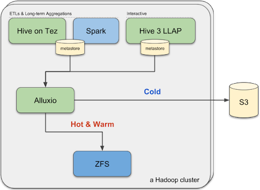
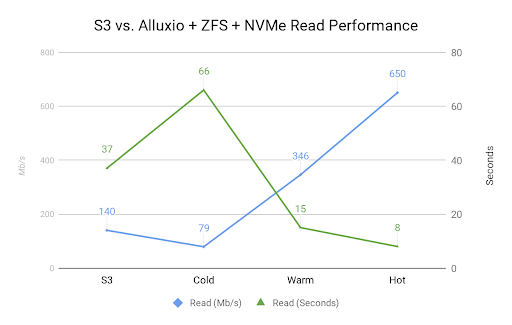
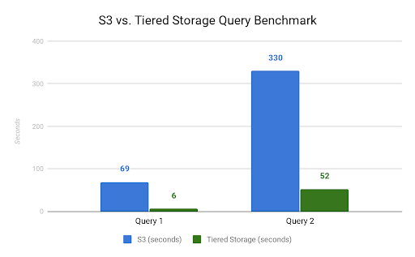

基于Alluxio分层存储将AWS S3上的Spark和Hive作业加速10倍
Alluxio技术博客翻译系列——Accelerate Spark and Hive Jobs on AWS S3 by 10x with Alluxio Tiered Storage
本文也会发布在微信公众号“Alluxio”上，欢迎关注该微信公众号。
在本文中，来自Bazaarvoice的 Thai Bui 介绍了Bazaarvoice如何利用Alluxio在AWS S3上构建分层存储(tiered storage)架构，以最大限度地提高在AWS EC2上进行大数据分析的性能并最大限度降低运营成本。本博客是完整版技术白皮书（即将推出）的简略版本，旨在介绍以下内容：
- 在AWS上构建高效大数据分析平台所面临的性能和成本两方面的挑战。
- 介绍如何设置Hive metastore以利用Alluxio作为存储层，从而支持AWS S3上的“热表(hot table)”存储。
- 介绍如何基于ZFS和NVMe在EC2实例上设置Alluxio的分层存储，以最大限度地提高读性能。
- 基于微型工作负载(micro benchmark)和真实应用负载(real-world benchmark)的基准测试结果评估与分析。
我们在AWS上的大数据应用与支撑平台
Bazaarvoice是一家总部位于美国德克萨斯州奥斯汀的数字营销公司。我们是一家软件即服务(software-as-a-service)提供商，使得零售商和品牌策划能够管理和理解用户生成的内容（user-generated content, UGC），例如对其产品的评论。我们提供的服务包括评论托管，UGC内容的收集和程序化管理，以及对消费者行为的深入分析。
我们的全球分布式服务为超过1900家大型互联网零售商和品牌提供服务和分析UGC内容。随着应用和服务的日益增长，Bazaarvoice的数据工程迎来了独特的挑战，作为一家中等规模的公司，却要处理互联网超大规模的数据。以2018年感恩节周末为例：整个假期3天的流量，产生了15亿次产品页面浏览量，为客户记录了51亿美元的在线销售额。在一个月内，我们的服务为全球超过9亿的互联网购物者托管和记录网络分析事件。
为了维持网络流量，我们在Amazon Web Service（AWS）上托管我们的服务。值得说明地，大数据支撑平台依赖于完全开源的Hadoop生态系统，利用Apache Hive、Spark for ETLs等工具； 也依赖于Kafka、Storm，用于处理无界数据集（例如流式数据）；同时也依赖于Cassandra、ElasticSearch和HBase，用于持久数据存储和长期聚合整理。由这些不同服务处理生成的数据最终将以一种高效的格式（例如Parquet和ORC）存储在S3中用于后续分析。
为何选择Alluxio
在使用了AWS S3之后，我们能够很容易地扩展(scale out)存储容量。然而，AWS S3也暴露出一定的局限性，无法完全满足我们的需求，并阻碍了我们进一步 “向上”扩展(scale “up”)。例如，无法以快于S3连接级别上限速度的速度访问S3文件。应用无法告诉S3将数据缓存在内存中或与应用程序存于同一位置，以便更快地进行分析和重复查询。更糟糕的是，如果不使用足够的硬件并行处理S3数据集，那么扫描1TB的数据就太慢了。另外，S3并不是开源的，所以我们无法定制它以满足我们特定需求。
解决此问题简单粗暴的方法可能是添加更多硬件并花更多钱。但是，考虑到预算有限，我们打算在2017年末找到更好的解决方案，以解决S3 在向上扩展方面所面临的挑战。
目标是通过分层存储系统加速S3上的数据访问，因为我们意识到并非所有数据访问都需要快速访问：我们工作负载的数据访问模式通常是有选择性的和随着时间变化的。因此，我们为分层存储系统的选择制定了以下目标：
- 它应该是灵活的：它可以扩展和收缩，因为我们的业务增长是没有数据移动和ETL的;
- 它应该能够给我们现有的大多数系统提供相同级别的互操作性;
- 它应该允许我们通过拥有更好的硬件或者更多的预算来简单地“向上扩展”。因此，系统需要高度可配置，且重新配置的操作成本较低。
综合多方面技术考虑之后，我们选择了Alluxio来达到我们的诸多条件。初步的微型基准测试表明，与在Spark和Hive中直接访问S3相比，基于Alluxio架构的方案在性能上有很大的提升。例如，我们的一些重复扫描同一数据集的任务在第二次运行时会减少10-15倍的执行时间。
使用Alluxio后的架构

我们将Alluxio与Hive metastore集成，作为分层存储S3的基础加速层。集群可以弹性配置，以支持我们的分层存储层。
在每个计算作业集群（Tez和Spark上的Hive）或交互式集群（LLAP上的Hive 3）中，可以更改表，配置其前数个周或前数个月的数据为使用Alluxio，而其余数据仍然直接引用S3上的数据。
由于除非通过Hive或Spark任务访问，否则数据不会缓存在Alluxio中，因此不存在数据移动，且重新配置表的成本非常低，这使我们能够非常灵活地适应不断变化的查询模式。
例如，看一下我们的页面视图数据集。页面视图是当互联网用户访问我们客户网站的其中一个页面时记录的事件。我们会收集原始数据并将其转换为Parquet格式的每小时数据。此数据以年、月、日和小时的分层结构形式存储在S3中：
1 | s3://some-bucket/ |
数据通过Hive Metastore注册到我们的一个集群，可用于在Hive或Spark中进行分析、ETL等各种用途。内部系统负责此注册任务。它会把检测到的每个新数据集直接更新到Hive Metastore。
1 | # add partition from s3. equivalent to always referencing “cold” data |
此外，我们的系统能够感知到分层存储以及为每个特定集群和表提供的配置。
例如，在分析师分析最近几周趋势数据的交互式集群中，一个月内的分区的pageview表被配置为直接从Alluxio文件系统读取。内部系统读取此配置，通过Alluxio REST API将S3 bucket挂载到集群，然后使用下面的Hive DDL自动进行表和分区的提升(promoting)/降级(demoting)：
1 | # promoting. repeating query will cache the data from cold->warm->hot |
当新数据到来，或旧数据需要被降级时，或者分层存储的配置发生变化时，就会异步且连续地进行此过程。
微型程序基准测试和现实应用基准测试的结果

我们的Alluxio + ZFS + NVMe SSD读微观基准测试是在i3.4xlarge AWS实例上执行的，具有高达10 Gbit网络带宽、128GB RAM和两个1.9TB NVMe SSD。我们将一个真实世界生产环境的S3 bucket挂载到Alluxio，并执行2次读测试。第一个测试使用AWS CLI以递归方式下载大约5Gb的Parquet数据到ramdisk（仅测量读性能）。
1 | # using AWS cli to copy recursively to RAM disk |
第二个测试使用Alluxio CLI将相同的Parquet数据下载到ramdisk。这次，我们进行了3次测试，得到了冷(cold)、暖(warm)、热(hot)的数值，如上图所示。
1 | # using AWS cli to copy recursively to RAM disk |
与S3相比，使用ZFS和NVMe的Alluxio v1.7执行冷读取的时间缩短了约78％（66秒vs. 37秒）。连续的暖读取和热读取分别比直接从S3读取快2.5倍和4.6倍。
然而，微型基准测试并不能说明全部问题，因此我们来看一下Bazaarvoice的分析师实际执行的一些真实世界的查询。
我们周末基于生产环境的交互式集群，重新在分层存储系统（默认配置）和S3（通过关闭分层存储）上运行查询。生产集群是20台i3.4xlarge节点，每个节点运行Hadoop 3和Hive 3.0（位于Alluxio 1.7和ZFS v0.7.12-1上）。

查询1是单个表进行去重查询，该查询是对6列进行分组操作（group by）。查询2是更复杂的4个表的join查询，该查询包含对5个列的分组（group by）和聚合操作（aggregation）。查询1处理来自200G数据集的95M输入记录和8G Parquet数据。查询2处理来自几个TB数据集的1.2B输入记录和50G的Parquet数据。
为了让读者易于理解，我们简化了这两个查询，其查询方案如下所示。与直接在S3上运行查询相比，分层存储系统能够将查询1加速11倍，查询2加速6倍。
1 | # query 1 simplified |
结论
Alluxio、ZFS和分层存储架构帮助我们为Bazaarvoice的分析师节省了大量时间。AWS S3易于扩展，能够通过灵活且便宜的分层存储配置进行扩充，从而使得我们可以专注于发展业务并根据需求“向上扩展”存储。
Bazaarvoice当前的生产配置可以处理大约35T的缓存数据和半PB存储在S3上的数据。如果要应对未来的数据增长，我们可以简单地添加更多节点以启用更多缓存数据集，或者升级硬件（i3.4xlarge - > i3.8xlarge - > i3.metal）以实现更快的本地化访问，或者同时采用这两种方法。